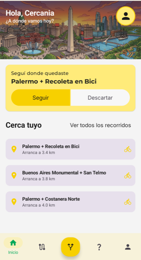
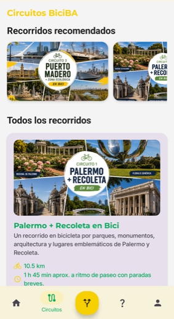
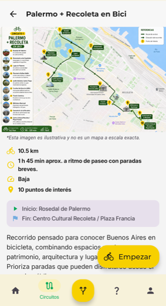
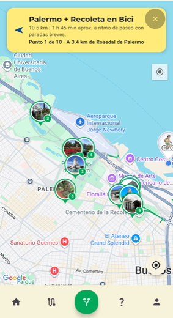
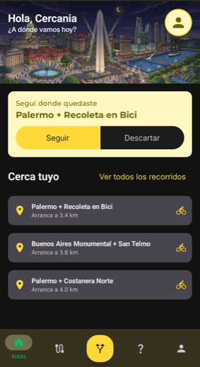

Inicio · Circuitos · Detalle del recorrido · En pleno circuito
Qué hace
🗺️
Las ciclovías, siempre a mano
Las de toda la Ciudad sobre el mapa, y disponibles sin conexión una vez descargadas.
🚲
Circuitos para recorrer
Cada uno con su distancia, duración estimada, dificultad y puntos de interés.
🧭
Una guía que acompaña
Señala el próximo punto, dice a qué distancia está y avisa al llegar. Si cerrás la aplicación, al volver seguís donde quedaste.
📍
Lo que tenés más cerca
El inicio ordena los circuitos por cuál arranca más cerca tuyo, sin que la lista salte con cada lectura del GPS.
De día y de noche

El tema lo elegís vos, no el sistema. Hasta las ilustraciones cambian.
Enlaces
Sugerencias y contacto: artemio.dev.mobile@gmail.com
¿Te resulta útil? Podés invitarnos un cafecito ❤️